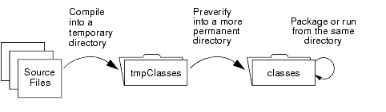

|
|
Like all applications written in the Java™ programming language, you must compile a MIDlet before running it. In addition to compiling, you must preverify the MIDlet. The preverification step adds additional information to your .class files so that they can be run in the MIDP environment. (Preverified class files can still be run by the Java 2 Platform, Standard Edition.)
This chapter covers both steps. It contains the sections:
You will use the .class files from the preverifier when you run your MIDlet. Therefore, when you compile your MIDlet, put the compiled files into a temporary directory for the preverifier. Put the preverifier’s output into a more permanent location, from which you can package or run the MIDlet. The following figure illustrates this sequence:

To compile a MIDlet, use the usual compiler, javac. (See the Release Notes for version requirements.) Use the -d option to javac so that all the .class files are put into a single, temporary directory. This makes the rest of the build process easier.
For example, to create an output directory, c:\midp2.0fcs\tmpclasses, and compile the MIDlet into that directory, you would enter the following commands:
c:> cd midp2.0fcs c:\midp2.0fcs> mkdir tmpclasses c:\midp2.0fcs> javac -classpath classes -d tmpclasses src/example/HelloMIDlet.java
There is an option for javac that you must use if your MIDlet is using the push functionality defined in the MIDP 2.0 Specification; the option is -bootclasspath. (Push functionality enables MIDP to launch a MIDlet to handle a message being sent to it. For example, if you are writing a MIDlet from which a user can get traffic reports, you might have the MIDlet use push to receive urgent warnings about the user’s commute route.)
The -bootclasspath option must specify the location of the MIDP class files (midpInstallDir/classes) because of differences in the class hierarchies of the J2ME and J2SE platforms. For example, the J2SE platform’s FilterInputStream class is not part of the J2ME platform. If the MIDlet were compiled with J2SE classes, it would fail preverification (the next step in the build process). With the -bootclasspath option, javac uses the J2ME platform class files.
The following example shows the javac command and the -bootclasspath option being used to compile a MIDlet called PushExample:
c:\myMIDlet> javac -bootclasspath c:/midp2.0fcs/classes -classpath c:/midp2.0fcs/classes PushExample.java
Note that the command uses both the -classpath option and the -bootclasspath option. The -classpath option gives the javac command places to search for classes that are not in the J2SE platform, such as classes in the javax.microedition package. It does not effect which platform (J2SE or J2ME) is used. The -bootclasspath option specifies the location of the Java platform files.
The preverifier creates new .class files that contain additional information that the MIDP Reference Implementation implementation requires. If a class file has not been preverified, MIDP will not be able to use it. (Preverified class files can still be used with a Java 2 Runtime Environment (JRE).) The preverifier can also check the class files to make sure that they do not use any Java programming language features that are prohibited by the CLDC specification. (See
http://jcp.org/jsr/detail/30.jsp for the CLDC specification.)
The preverifier is in the midpInstallDir\bin directory; the executable name is preverify. Using the command with no options provides help. For example, you could get help with the command:
For a summary of the command in a man page format, see Using MIDP.
The simplest way to run the preverifier is to have it create new .class files without checking for the use of prohibited features. You might want to use the preverifier this way if you recompile after making a simple bug fix.
To run the preverifier this way, provide the classes and input files to be preverified. The input files can be directories that contain .class files, or JAR or ZIP files that contain .class files. If you provide a directory, the preverifier also checks its subdirectories. The following example shows the preverify command being used to check all the .class files in the tmpclasses directory and its subdirectories:
By default, the preverifier writes its new class files to the ./output directory. You can change this directory, as shown in the following example, which preverifies a class and puts the preverified .class file into the classes directory
After you run the preverifier, the contents of the output directory correspond to the types of inputFiles you provide. The directory will contain a .class file that corresponds to each input class, a directory tree that corresponds to each input directory, and a JAR file that corresponds to each input JAR file.
To both check for the use of Java programming language features that are not part of the CLDC specification and preverify your class files, you need to use one or more additional arguments to the preverify command. The additional arguments are can check for the presence of floating point operations, the use of finalizers, and calls to native methods from application classes. The following example checks for these problems:
c:\midp2.0fcs> bin\preverify -nofp -nofinalize -nonative -classpath classes;tmpclasses -d classes HelloMIDlet
The following example is a simpler version of the previous one. It uses a single switch that is equivalent to using the -nofp, -nofinalize, and -nonative switches together:
|
|
Creating MIDlet Suites MIDP Reference Implementation, Version 2.0 FCS |
Copyright © 2002 Sun Microsystems, Inc. All rights reserved.